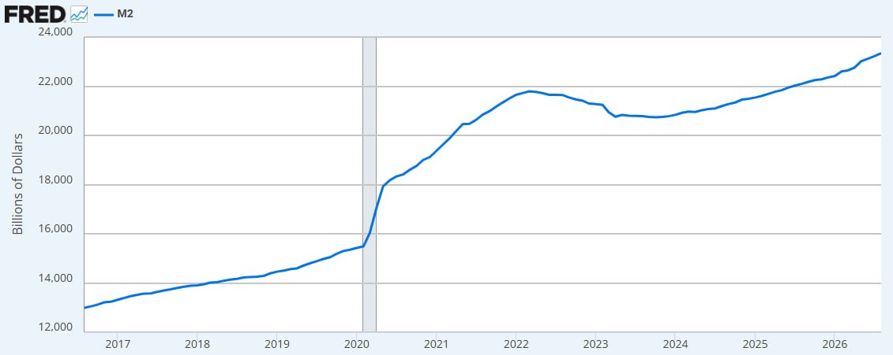
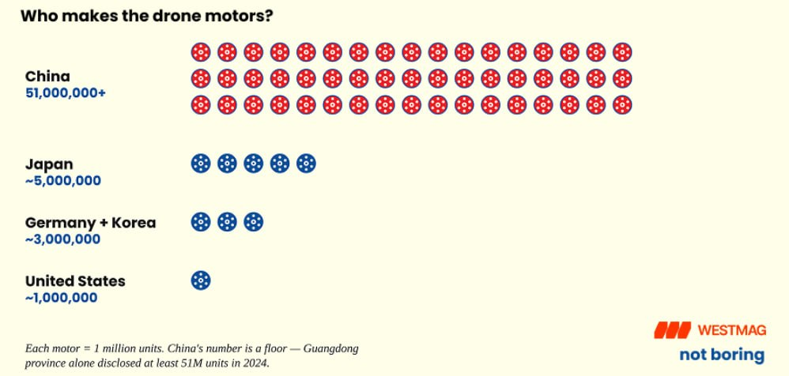
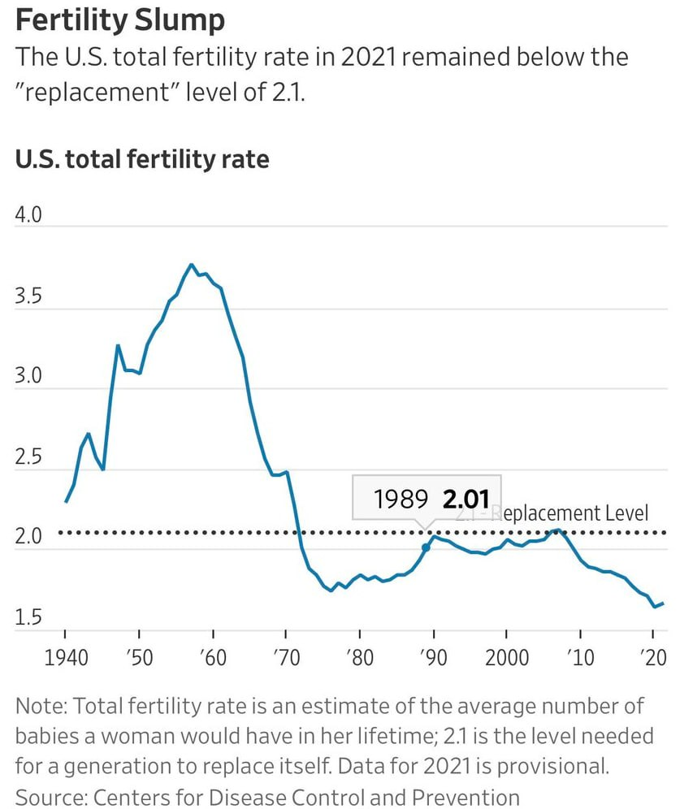
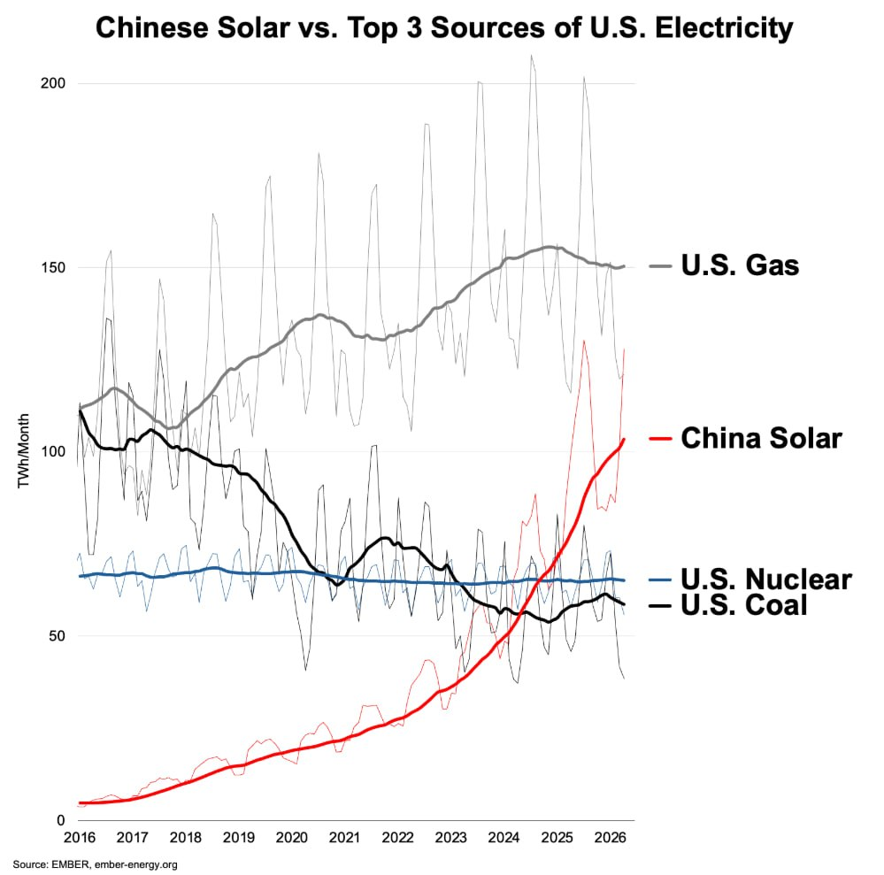
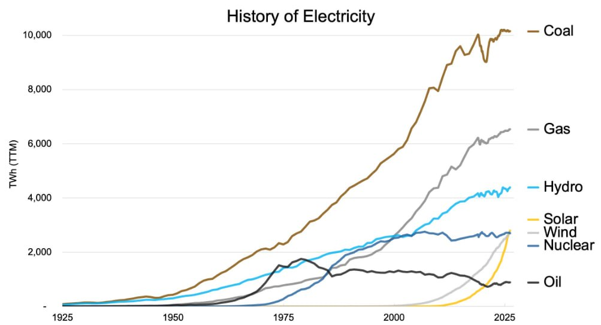
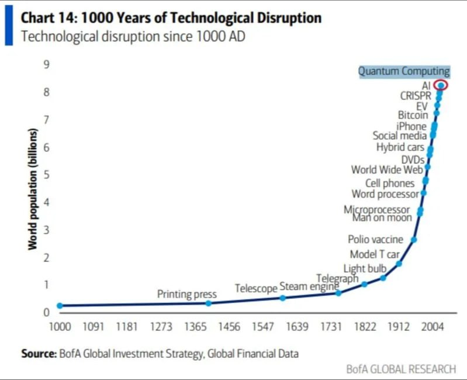

A few charts that I regularly think about. They are either illustrative of the kinds of things I think about, or were impactful in my way of thinking. A few of them are simply fantastic information-dense charts that I appreciate.






Planned
- Progress acceleration
- Radicalization (political parties)
- % of consultants
- Home prices vs. salaries